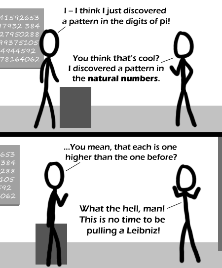

Comic JK 337
When I Feel Like It
⇤
<
?
>
⇥

⇤
<
?
>
⇥
Forum
.
RSS
.
Digg
.
Facebook
.
Reddit
.
Twitter
.
Stumbleupon
Nah trick. >> number 337? >>> What the heck! this is both 337 and 338!!! >>>> OH NOES THE WORLD WILL END!!!! >>>>> So 337 + 1 = 336 + 1? >>>>>> um, people? that is how the site has worked for some time now. i don't know what piece of code is uncertain of what the latest number is, but this is not new. Wow this is up early. title text win >ahem...alt text win. Title text is shown when a picture can't be displayed and should be an error message. Alt text shows up on mouseover. >>Umm, >>>Umm indeed, my good sir! >>>>Alt text is deiplayed when an image can't be loaded. Title text is displayed on mouseover. ;okj;oij sorry, but you have your terms mixed up. Alt text is the can't-be-displayed. Title text is the mouse-over. Don't believe me? Check w3schools. If that doesn't convince you, head over to w3c and check the specs. >>>erm... actually, it's supposed to be the other way round - alt is supposed to appear if the image is not displayed - but earlier versions of Internet Explorer got it wrong, as it was programmed by medieval theologians who also believed that bees can't fly... incidentally, WebKit doesn't get the "alt and title" strictly correct either - there is a long-standing open bug... >> Firefox image properties lists the Alt text as "Pulling a Leibniz" and the Title as "The mathematical equivalent of cockblocking." I suppose its possible Firefox is wrong, but then you're arguing with everyone who contributes to the Firefox source code >>> Opera also. I don't get it, not even the taltle text... Sometimes I wish English was my first language... >>>erm... it's a joke about one-upmanship... ( and "cockblocking" is when someone says or does something to prevent a man chatting up a woman... ) >>>>You neglected an explanation of "Leibniz." no matter, just google the name. >>>>>Arrrgh, you bastards stop deleting my text >>>erm... I assumed I didn't need to explain Leibniz... I thought everyone knew about Leibniz... :| Next you'll be claiming people have an incomplete knowledge of Kurt Godel... >>>>>Basically, Newton invented calculus, then Leibniz invented it--by himself--shortly after. >>>>> Leibniz makes great cookies! >>>>>> It seems he does everything, and does it better than anyone else. >>>>>>>Leibniz invented calculus after Newton did, and got the credit for it. >>>>>>>>Actually, Leibniz came up with usable and sane calculus notation after Newton presented it in a way that no one could understand. >>>>>>>>> and if i remember correctly he's been featured for that in this comic before >>>( random memory of an OU programme in which the presenter excitedly showed Leibniz's notebooks - "and there we see the first ever use of the integral sign..." geek porn at its finest... ) >>Yay! >>>>Wonder what went through his mind that made him come up with that sign... >>>>>"What if I took an S, like for sum, but stretched it out?" >>>( or: while attempting to swat a fly, his quill hand slipped, stretching his intended "s"... "hmmm" he thought, "that actually looks quite good..." ) I pulled my Leibniz out of your mother last night.